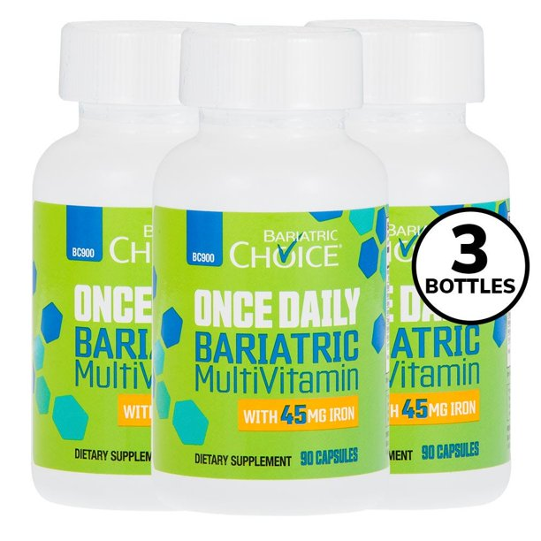

Liquid Bariatric Vitamins
It is important to take the proper nutrition supplements after bariatric surgery. Since a bariatric surgeon will limit the amount of food a person can consume, he or she will be deficient in vitamins and minerals. A lack of vitamins and minerals can result in memory loss, muscle soreness, and other health issues. Liquid bariatric vitamins can prevent these deficiencies. These are often formulated to help patients maintain healthy diets after bariatric surgery.
Many multivitamins for bariatric patients contain similar ingredients, but not as much of the necessary nutrients. If you're not sure which vitamins and minerals are best for your situation, ask your nutritionist for recommendations. Alternatively, you can choose standard OTC vitamins. Several over-the-counter multivitamins are available at your local pharmacy, but they may not contain the exact doses needed. You'll need to speak with your healthcare provider before purchasing a vitamin. bariatric multivitamin
Bariatric vitamins are often prescribed by your healthcare provider after bariatric surgery. These nutritional supplements must be taken on a regular basis because the new diet will change the way the body digests food and absorbs the necessary nutrients. If you don't like the taste of the over-the-counter vitamin, ask your health care provider to recommend a brand that is specifically made for bariatric patients. It's easy to find these supplements in your local drugstore, but it's important to note that they may not contain the necessary dosages.
In addition to vitamin D, you may also need to supplement your daily iron intake with additional calcium. While you might not need iron supplements, bariatric multivitamins with iron may not have enough iron. Therefore, you might need to add an extra one. If you don't need iron supplements, bariatric multi-vitamins should contain enough iron. You'll need to take an additional vitamin B-12 if you're low on iron.

For iron, look for a bariatric multivitamin with at least 18mg of iron. In addition to calcium, you'll also need iron supplements. If you're taking a multivitamin with iron, make sure the pill contains at least 400mg of folic acid. If you need more iron, you should take an iron supplement that is formulated for people with anemic conditions.
Other bariatric vitamins can be found at your local drug store. These vitamins are available in various forms and can be taken as needed. After bariatric surgery, you should take vitamin B12 and calcium citrate with a probiotic to improve your digestion and immunity. The best vitamin for you will be the one that has the right balance of all the nutrients. It is also essential to be aware of your body's pH level and blood pressure.
Many bariatric vitamins contain specific ingredients that can be helpful for the body's immune system and digestive health. The vitamin B12 in particular is essential for enhancing mental function and helping to manufacture red blood cells. The vitamin B12 in the vitamins will also strengthen the immune system and increase energy levels. Aside from these, the vitamins may also contain iron, which is essential for growth and healthy metabolism. During postoperative recovery, patients should take a multivitamin with iron to ensure they don't develop an iron deficiency.
In addition to these, bariatric vitamins should include the necessary amounts of Vitamin B12 and iron. Depending on the type of surgery you had, you may need additional amounts of these vitamins. A multivitamin is recommended to be taken before and after surgery. In addition, you should consider incorporating a multivitamin with other foods. This will give you a better idea of your vitamin needs and ensure your body is absorbing it. bariatric vitamins
It is also important to remember that vitamin needs change over time, so you must consult your doctor if you're concerned about your vitamin levels. For example, the recommended daily allowances for iron and calcium are different for individuals after gastric bypass surgery. The same goes for vitamin D. However, if you're planning to undergo a bariatric surgery, it's important to choose a multivitamin with the right ingredients.
Vitamins and minerals are essential for a bariatric patient's health. A bariatric patient's body needs a higher amount of thirteen micronutrients than a normal person. A bariatric vitamin is not necessary for calcium citrate. It is not necessary to be more expensive or more complicated than your standard OTC vitamin. In addition, it should taste better. It should be easier to take in and has a better taste.